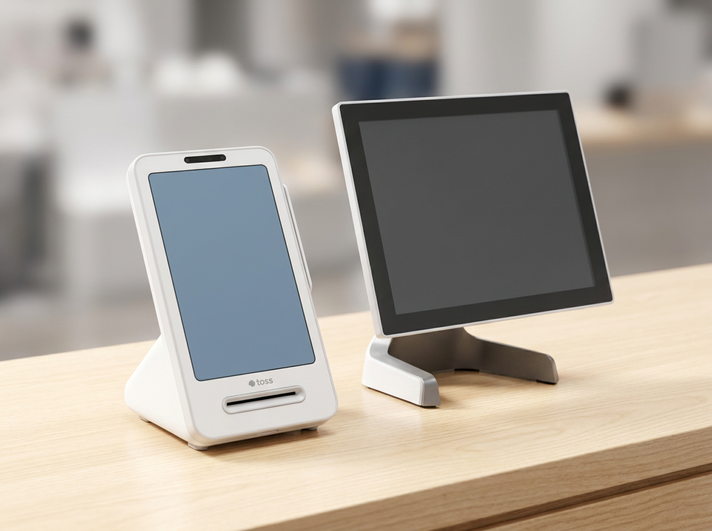
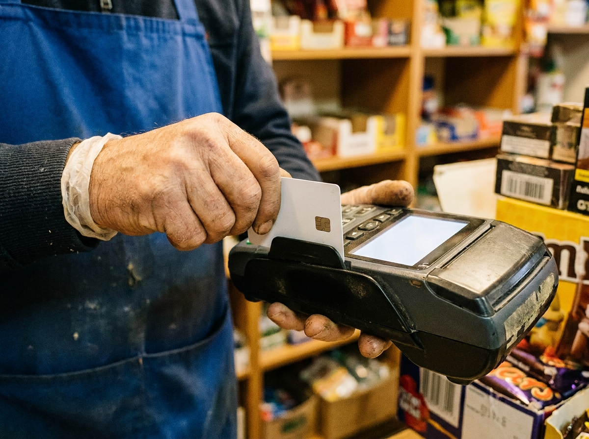

카드 결제 단말기 종류 총정리 — 우리 매장엔 토스·네이버·일반 단말기 중 뭐가 맞을까
카드 결제 단말기는 크게 세 갈래로 나뉩니다. 월 0원·약정 없는 토스단말기와 네이버단말기, 그리고 통신 방식에 따라 나뉘는 일반 유선/무선 카드단말기입니다. 결론부터 말씀드리면, "우리 매장에 맞는 단말기"는 매장 형태(좌석 회전율, 배달 비중, 이동 결제 여부)와 이미 쓰고 있는 포스·주문 환경에 따라 달라집니다. 누리네트웍스는 14년간 수도권에서 3만여 매장에 결제 장비를 설치해 온 결제·포스 전문 기업으로서, 정품 신제품만 공급하며 서울 본사에서 서울·인천·경기 전역을 자사 엔지니어가 직접 방문 설치합니다. 이 글 하나로 세 종류의 차이와 매장 유형별 추천을 정리해 드리겠습니다.
카드 단말기는 왜 종류가 나뉘나
같은 "카드 긁는 기계"처럼 보여도 단말기는 통신 방식과 결제 생태계에 따라 성격이 완전히 다릅니다. 유선이냐 무선이냐는 "어디서 결제를 받느냐"의 문제이고, 토스·네이버 같은 브랜드 단말기냐 일반 단말기냐는 "어떤 결제·정산 환경에 묶여 있느냐"의 문제입니다. 매장 사장님 입장에서 중요한 건 결국 세 가지입니다. 첫째 설치·유지 부담(약정과 비용), 둘째 결제 편의(간편결제·해외결제 대응), 셋째 우리 매장 동선에 맞는 형태입니다. 이 세 가지 기준으로 아래에서 하나씩 짚어 보겠습니다.
세 가지 단말기, 이렇게 다릅니다
### 토스단말기
토스단말기는 카드 결제와 함께 다양한 간편결제를 한 대에서 받도록 설계된 브랜드 단말기입니다. 화면이 큰 형태(프론트형)와 휴대형이 있어 카운터 고정형·이동형을 매장 상황에 맞춰 고를 수 있습니다. 가장 큰 특징은 월 0원·약정 없음으로 시작 부담이 낮다는 점입니다. 삼성페이·네이버페이·카카오페이 등 손님들이 많이 쓰는 간편결제 대응이 강점입니다.
### 네이버단말기
네이버단말기(네이버 커넥트 계열)는 네이버 예약·주문·스마트플레이스 등 네이버 생태계와의 연동에 강점이 있는 단말기입니다. 네이버로 유입되는 손님 비중이 높은 매장이라면 예약·리뷰·결제가 하나로 이어지는 흐름을 만들 수 있습니다. 이 역시 월 0원·약정 없음 조건으로 운용할 수 있어, 부담 없이 네이버 채널을 결제까지 연결하고 싶은 사장님께 잘 맞습니다.
### 일반 유선/무선 카드단말기
가장 오래 검증된 방식입니다. 유선 단말기는 카운터에 고정해 두고 IC 카드를 꽂아(삽입) 결제하는 안정적인 형태로, 통신이 유선이라 연결이 끊길 걱정이 적습니다. 무선 단말기는 배터리와 무선망으로 작동해 테이블·야외·배달 현장 등 손님에게 다가가서 결제받아야 하는 매장에 적합합니다. 특정 생태계에 묶이지 않고 순수하게 카드 결제 본연에 집중하는 선택지입니다.

한눈에 보는 비교표
| 구분 | 토스단말기 | 네이버단말기 | 일반 유선/무선 |
|---|---|---|---|
| 시작 부담 | 월 0원·약정 없음 | 월 0원·약정 없음 | 상담 시 안내(거품 뺀 직접 공급가) |
| 형태 | 프론트형·휴대형 | 카운터·연동형 | 유선(고정)·무선(이동) |
| 간편결제 대응 | 강함 | 강함(네이버 계열) | 단말·설정에 따라 대응 |
| 생태계 연동 | 토스 결제 환경 | 네이버 예약·주문 | 특정 생태계 비종속 |
| 잘 맞는 곳 | 간편결제 손님 많은 매장 | 네이버 유입 많은 매장 | 안정성·이동결제 중시 매장 |
수수료율·정산주기 등 결제 조건은 카드사·여신금융협회·PG 정책에 따라 달라질 수 있으므로, 정확한 내용은 카드사 및 여신금융협회 공식 안내를 함께 확인하시길 권합니다.
우리 매장 유형별 추천
- 카페·베이커리·분식 등 회전 빠른 매장: 간편결제 손님이 많다면 토스단말기, 카운터 고정 위주라면 안정적인 일반 유선 단말기가 무난합니다.
- 식당·주점 등 테이블 결제가 잦은 매장: 자리에서 IC 카드를 꽂아 결제받을 수 있는 무선 단말기가 동선을 크게 줄여 줍니다.
- 미용실·병의원·학원 등 예약 기반 매장: 네이버 예약·유입이 많다면 네이버단말기로 예약부터 결제까지 흐름을 잇는 방식이 유리합니다.
- 이동·출장·배달 병행 매장: 배터리로 작동하는 무선 단말기가 필수에 가깝습니다.
어떤 경우든 이미 쓰고 있는 포스나 테이블오더·키오스크와의 궁합이 중요합니다. 누리포스는 200곳 이상의 레퍼런스를 바탕으로, 단말기 단독이 아니라 매장 전체 결제 환경을 함께 설계해 드립니다.

자주 묻는 질문(FAQ)
Q. 토스단말기와 네이버단말기, 정말 월 0원·약정 없음인가요?
네, 두 단말기는 월 0원·약정 없음 조건으로 시작하실 수 있습니다. 다만 매장에 필요한 부가 구성이나 함께 쓰는 장비 여부에 따라 안내가 달라질 수 있으니, 우리 매장 기준의 정확한 조건은 상담 시 안내해 드립니다.
Q. 카드 수수료는 단말기 종류에 따라 달라지나요?
카드 수수료율과 정산주기는 단말기 브랜드가 아니라 카드사·여신금융협회·PG 정책과 가맹점 등급에 따라 정해집니다. 따라서 이 글에서 특정 수치를 단정하지 않으며, 정확한 요율은 카드사 및 여신금융협회 공식 안내를 확인하시기 바랍니다.
Q. 유선과 무선 중 뭘 골라야 하나요?
결제를 카운터 한 곳에서만 받는다면 연결이 안정적인 유선, 테이블·야외·배달처럼 손님에게 다가가 결제받아야 한다면 무선이 맞습니다. 매장 동선을 알려 주시면 형태까지 함께 잡아 드립니다.
Q. 설치와 A/S는 어떻게 진행되나요?
누리네트웍스는 서울 본사에서 수도권(서울·인천·경기) 전역을 자사 엔지니어가 직접 방문해 설치합니다. 정품 신제품을 공급하며, 설치 이후에도 직접 대응하는 체계를 갖추고 있습니다.
상담 안내
우리 매장에 맞는 단말기 조합이 헷갈리신다면, 매장 형태만 알려 주세요. 14년 노하우와 거품 뺀 직접 공급가로 토스·네이버·일반 단말기 중 가장 합리적인 구성을 제안해 드립니다.
- 📞 전화상담 1544-7754
- 🌐 홈페이지 nwpos.co.kr